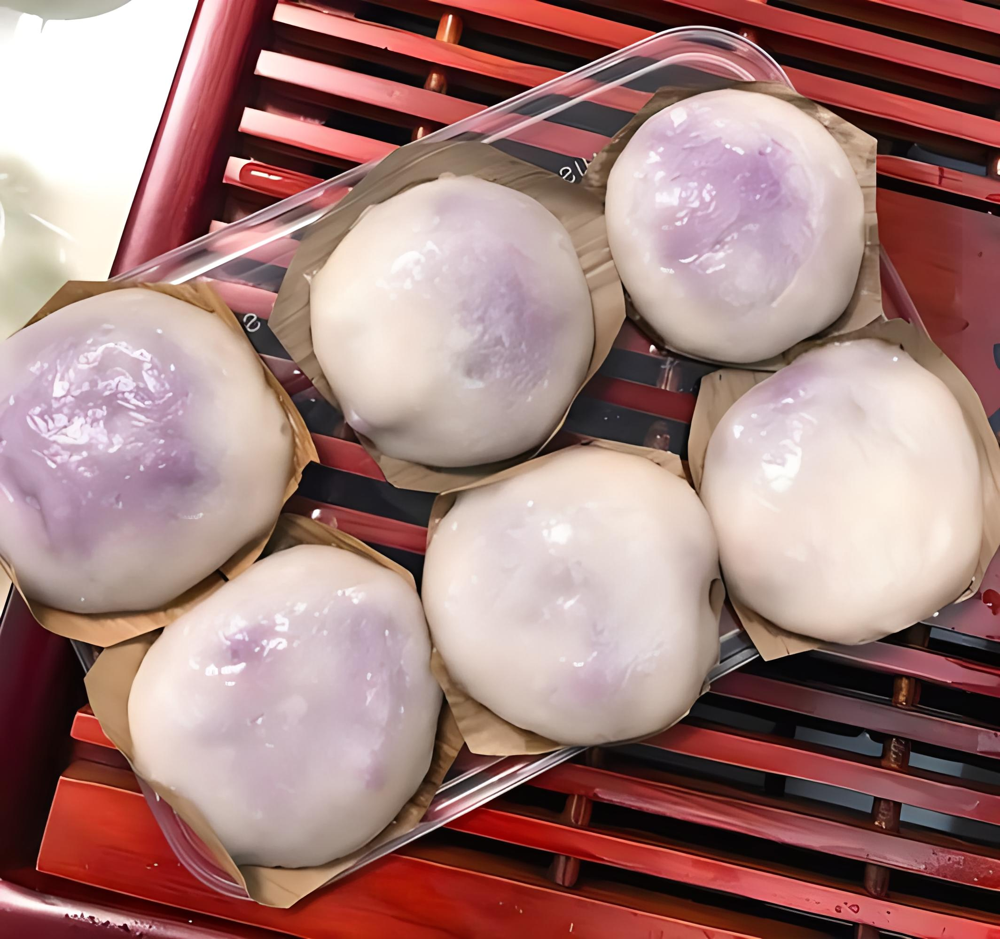

| 食材 |
克数 |
| 紫薯 |
300克 |
| 糯米粉 |
200克 |
| 白糖 |
适量 |
| 芝麻 |
适量 |
食用油 |
适量 |
烹饪步骤
- 紫薯洗净，切块，蒸熟，搅成泥状。
- 将糯米粉加入薯泥中，搅拌均匀，揉成面团。
- 将面团分成小剂子，搓成椭圆形。
- 沸水中放入紫薯团，煮熟捞起，沥干水分。
- 烧热锅，加入食用油，将紫薯团放入锅中煎至两面金黄。
- 撒上白糖和芝麻，翻煎均匀。
- 出锅后装盘，即可食用。
备注
- 紫薯糯米糍外脆内软，香甜可口，适合作为点心或下午茶。
- 煎的时候火不要太大，防止糍粑外焦内生。
参考链接
返回主页
开始计时
停止计时
00:00:00